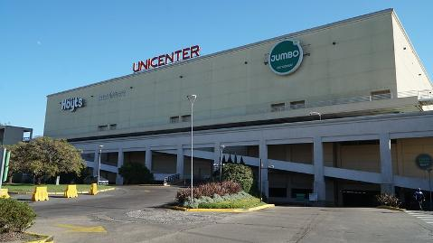
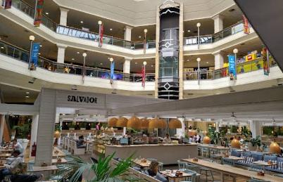

Parada 3 de 4 · Estás en: Unicenter
Unicenter
Martínez, Provincia de Buenos Aires
Amplia variedad de propuestas comerciales, gastronómicas y de entretenimiento: marcas nacionales e internacionales, oferta gastronómica, cine, tecnología, servicios y bienestar.
- Moda nacional e internacional
- Gastronomía
- Cine y entretenimiento
- Tecnología
- Bienestar

Experiencias
Moda y marcas
Locales de marcas nacionales e internacionales.
Gastronomía
Una amplia oferta gastronómica.
Entretenimiento y cine
Espacios de entretenimiento y complejo de cine.
Tecnología y bienestar
Tecnología, servicios y propuestas de bienestar.
Galería de fotos

Información útil
- Dirección
- Paraná 3745, Martínez, Provincia de Buenos Aires
- Horarios
- Lunes a domingo de 10:00 a 22:00 hs.
- Acceso en auto
- Acceso directo desde la Autopista Panamericana.
- Transporte
- Diferentes opciones de transporte público.
- Estacionamiento
- Sectores exclusivos y espacios para personas con movilidad reducida.
- Duración sugerida
- Medio día, por sus grandes dimensiones.
Recomendaciones
- Planificar el recorrido con tiempo debido a las grandes dimensiones del centro comercial.
- Aprovechar el estacionamiento con sectores exclusivos y espacios destinados a personas con movilidad reducida.
- Utilizar los accesos directos desde la Autopista Panamericana para evitar demoras en hora pico.